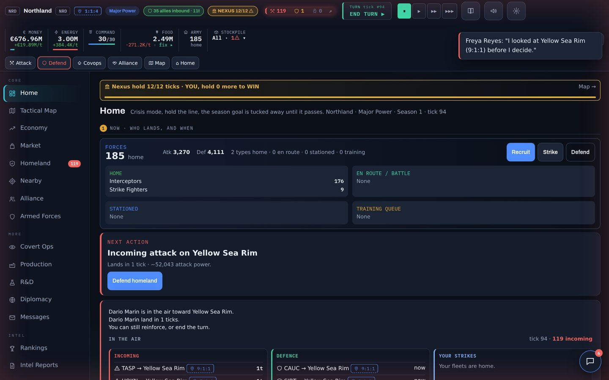
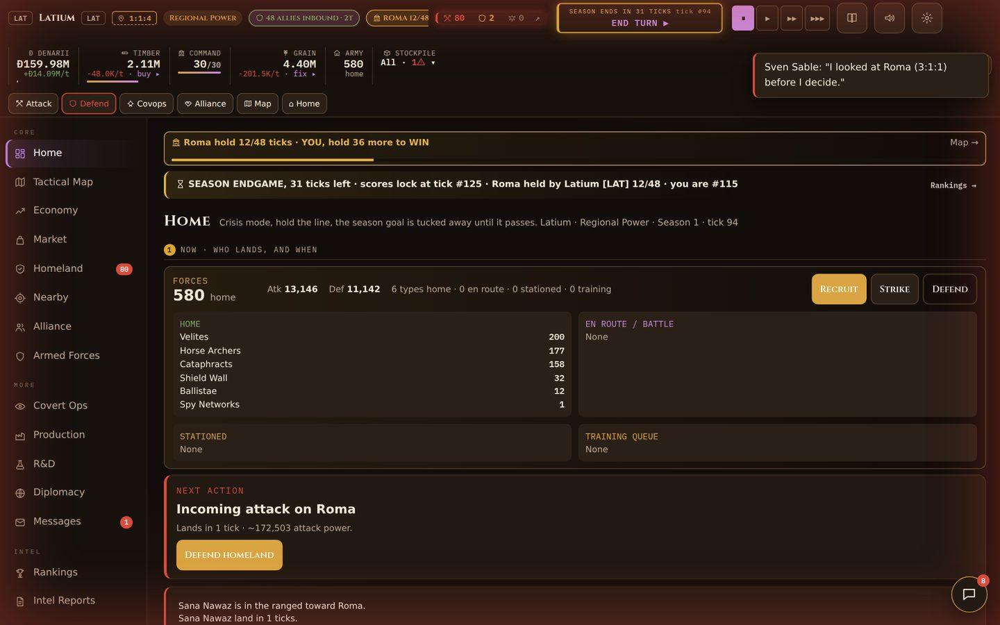

Version 1.0 is for Terrastate and Romaterra alike. The rules of a season did not change. What changed is how the game talks to you: what is happening, what to do next, and why. Your saved game keeps working. Open the game in the same browser and carry on.
Who is in the air, and when do they land? Incoming attacks are red, help from allies is green, your own strikes are blue. Your army sits right underneath, with Recruit, Strike and Defend.
The homeland you pick is the homeland you get, with its economy. No AI nation can slip into your spot while the world is set up.
A compact top bar with your supplies in one row, four clear buttons on your first evening, wide lists you can swipe sideways, and a map that follows your finger.
Line held, region taken, attack failed: you read it at a glance, with your losses and theirs, and the next move right under it.
The defensive line uses militia and infantry you already have, never units you have not unlocked yet. Soldiers still in training count toward your defence.
The small overview map now sits top left, so it is always in view, also on smaller laptop screens.

Another nation's strength stays unknown until a scan lands. A scan costs influence and a command point, and their radar can bounce it. No scan, no forecast.
Break the garrison and the region is yours, with a cut of what they had stored: five percent, with a cap. A shield or beginner protection still stops both the flag and the loot.
You choose your path after you have seen one battle. That choice locks for the whole season, so now you know what you are choosing.
The price you read is the price you pay. Buying into a hot market, or buying in bulk, costs more tax. Covering a real shortage costs less. Your buys and sells show as dots on the chart.
The strongest late units (Swarm Drones, Ghost Squadrons and Titan Mechs in Terrastate) no longer decide a season on their own. They hit less hard and cost more.
Combat and stockpiles refuse broken numbers, so one bad tick can never freeze your game.
In your first ticks a neighbour tests your shield. They cannot take the ground while beginner protection holds, so you get to watch a real attack without losing anything.
The nations around you have a name and a temperament: some raid, some hold, some are rich and thin. They remember a strike.
Production shows what a place is (a breadbasket, a works, a fortress) and how full it is. A technology says what it unlocks before it mentions a percentage.
Captures, held lines, incoming fire and successful covert work are written into the alliance feed automatically.
Wars grow in stages, from scouting to occupation. Alliances vote on world laws. Landmarks give a region a special reward worth fighting for.
Every tip card has a close button, and stays closed in your browser until you reset your tips in the settings.
Everything above is also in Romaterra, in Roman dress: legions instead of tanks, denarii instead of euros, and Roma with its Imperial Palace as the prize. In Romaterra the late units that were toned down are the Slinger Swarms, Shadow Exploratores and War Elephants.

Prefer a printable version? Terrastate note (PDF) · Romaterra note (PDF)